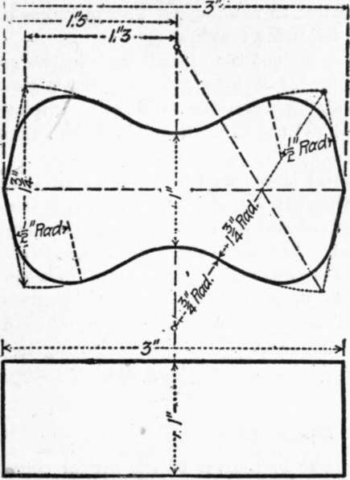
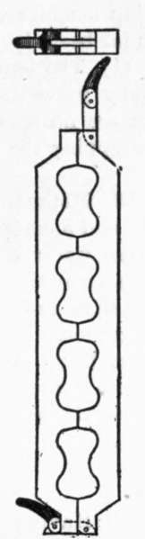

Report Of Committee On Uniform Tests Of Cement. Part 3
Description
This section is from the book "Cement And Concrete", by Louis Carlton Sabin. Also available from Amazon: Cement and Concrete.
Report Of Committee On Uniform Tests Of Cement. Part 3
Time Of Setting
37. Significance
The object of this test is to determine the time which elapsed from the moment water is added until the paste ceases to be fluid and plastic (called the "initial set and also the time required for it to acquire a certain degree of hardness (called the " final " or "hard set"). The former of these is the more important, since, with the commencement of setting, the process of crystallization or hardening is said to begin. As a disturbance of this process may produce a loss of strength, it is desirable to complete the operation of mixing and moulding or incorporating the mortar into the work before the cement begins to set.
1 The Committee of the American Society for Testing Materials on Standard Specifications for Cement inserts the following table for temporary use to be replaced by one to be devised by the Committee of the American Society of Civil Engineers.
38. It is usual to measure arbitrarily the beginning and end of the setting by the penetration of weighted wires of given diameters.
39. Method
For this purpose the Vicat Needle, which has already been described in Paragraph 30, should be used.
40. In making the test, a paste of normal consistency is moulded and placed under the rod (L), Fig. 2, as described in Paragraph 31; this rod, bearing the cap (D) at one end and the needle (H), 1 mm. (0.039 in.) in diameter, at the other, weighing 300 gr. (10.58 oz.). The needle is then carefully brought in contact with the surface of the paste and quickly released.
41. The setting is said to have commenced when the needle ceases to pass a point 5 mm. (0.20 in.) above the upper surface of the glass plate, and is said to have terminated the moment the needle does not sink visibly into the mass.
42. The test pieces should be stored in moist air during the test; this is accomplished by placing them on a rack over water contained in a pan and covered with a damp cloth, the cloth to be kept away from them by means of a wire screen; or they may be stored in a moist box or closet.
43. Care should be taken to keep the needle clean, as the collection of cement on the sides of the needle retards the penetration, while cement on the point reduces the area and tends to increase the penetration.
44. The determination of the time of setting is only approximate, being materially affected by the temperature of the mixing water, the temperature and humidity of the air during the test, the percentage of water used, and the amount of moulding the paste receives.
Standard Sand
45. The Committee recognizes the grave objections to the standard quartz now generally used, especially on account of its high percentage of voids, the difficulty of compacting in the moulds, and its lack of uniformity; it has spent much time in investigating the various natural sands which appeared to be available and suitable for use.
46. For the present, the Committee recommends the natural sand from Ottawa, 111., screened to pass a sieve having 20 meshes per linear inch and retained on a sieve having 30 meshes per linear inch; the wires to have diameters of 0.0165 and 0.0112 in., respectively, i.e., half the width of the opening in each case. Sand having passed the No. 20 sieve shall be considered standard when not more than one per cent passes a No. 30 sieve after one minute continuous sifting of a 500-gram sample.
47. The Sandusky Portland Cement Company
The Sandusky Portland Cement Company, of Sandusky, Ohio, has agreed to undertake the preparation of this sand, and to furnish it at a price only sufficient to cover the actual Cost of preparation.
Form Of Briquette
48. While the form of the briquette recommended by a former Committee of the Society is not wholly satisfactory, this Committee is not prepared to suggest any change, other than rounding off the corners by curves of 1/2-in. radius, Fig. 3.
Fig. 3.
Fig. 4.
Moulds
49. The moulds should be made of brass, bronze, or some equally non-corrodible material, having sufficient metal in the sides to prevent spreading during moulding.
50. Gang moulds, which permit moulding a number of briquettes at one time, are preferred by many to single moulds; since the greater quantity of mortar that can be mixed tends to produce greater uniformity in the results. The type shown in Fig. 4 is recommended.
51. The moulds should be wiped with an oily cloth before using.
Mixing
52. All proportions should be stated by weight; the quantity of water to be used should be stated as a percentage of the dry material.
53. The metric system is recommended because of the convenient relation of the gram and the cubic centimeter.
54. The temperature of the room and the mixing water should be as near 21 degrees Cent. (70 degrees Fahr.) as it is practicable to maintain it.
55. The sand and cement should be thoroughly mixed dry. The mixing should be done on some non-absorbing surface, preferably plate glass. If the mixing must be done on an absorbing surface it should be thoroughly dampened prior to use.
56. The quantity of material to be mixed at one time depends on the number of test pieces to be made; about 1000 gr. (35.28 oz.) makes a convenient quantity to mix, especially by hand methods.
57. The Committee, after investigation of the various mechanical mixing machines, has decided not to recommend any machine that has thus far been devised, for the following reasons:
(1) The tendency of most cement is to " ball up " in the machine, thereby preventing the working of it into a homogeneous paste; (2) there are no means of ascertaining when the mixing is complete without stopping the machine, and (3) the difficulty of keeping the machine clean.
Continue to:
- prev: Report Of Committee On Uniform Tests Of Cement. Part 2
- Table of Contents
- next: Report Of Committee On Uniform Tests Of Cement. Part 4